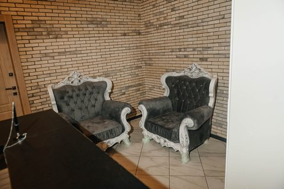

Клинический психолог · Тула и онлайн
Юлия Бердникова
16 лет практики. Работаю со страхами, тревогой и паническими атаками. Принимаю очно в Туле и онлайн.


Новое место
Кабинет в «Ликёрке»
С ноября я принимаю в собственном кабинете: Тула, проспект Ленина, 85. [уточнить: корпус, этаж, кабинет]
Диван, кресла и свет из окна. Онлайн-встречи — по видеосвязи.


Обо мне
Клинический психолог, 16 лет практики
Меня зовут Юлия Бердникова. Я клинический психолог и принимаю очно в своём кабинете в Туле и онлайн — в том числе тех, кто живёт в другом городе.
Ко мне приходят с разным: со страхами и паническими атаками, с бессонницей, со сложностями в отношениях, с ощущением, что потерялись. Вместе мы разбираемся, что стоит за этим состоянием, — в вашем темпе.
Без оценок
Здесь можно говорить о чём угодно — без осуждения.
Очно и онлайн
В кабинете в Туле или по видеосвязи — как вам удобнее.
По записи
Встречи — по предварительной записи, в часы работы кабинета.
Подходы
Когнитивно-поведенческий подход · экзистенциально-гуманистический подход · транзактный анализ
Премия ПроДокторов 2026 · 3-е место · категория „Психолог“
Запросы
С чем я работаю
Группы составлены по списку запросов, с которыми ко мне приходят. Первые две — мои основные направления.
01Основное направлениеСтрахи, тревога, панические атаки
- Тревожность, страхи, фобии, панические атаки
- Сверхнастороженность
- Навязчивые образы и воспоминания
- Тревожное (избегающее) расстройство личности
02Основное направлениеЛичностный рост и уверенность
- Болезненная застенчивость или нерешительность
- Неспособность взять на себя ответственность и обязательства
- Сниженная способность чётко формулировать мысли, цели, задачи
- Внутриличностные конфликты
03Эмоции и состояние
- Обида, вина, стыд
- Злость, гнев
- Резкие перепады настроения
- Состояние гиперактивности: трудно остановиться и расслабиться
- Навязчивые состояния стыда
- Утрата чувства собственного достоинства
- Вялость эмоциональных реакций
- Невротические состояния
04Отношения
- Любые сложности во взаимоотношениях
- Созависимые отношения
- Выход из треугольника Карпмана
- Отчуждённость, одиночество, изоляция
- Чрезмерная или сниженная сексуальная активность
05Утраты и травмы
- Утраты (смерть, развод и др.)
- Детские психотравмы у взрослых
- Допроживание незавершённых ситуаций
06Сон, усталость, тело
- Нарушения сна
- Хроническая усталость
- Психосоматика: головные боли, ЖКТ, кожа, тяжёлый ПМС
- Мигрень
- Болезненная чувствительность к свету и звукам
07Пагубные пристрастия и самоповреждение
- Переедание
- Пьянство
- Курение
- Самоповреждающее поведение
08 · Отдельная услугаЗаключение перед ЭКО
- [уточнить: формат, срок, стоимость]
Приём
Как проходит приём
Встречи — по записи, в кабинете или онлайн.
В кабинете
Тула, «Ликёрка», проспект Ленина, 85. Как найти вход и где оставить машину — в разделе «Как добраться».
Онлайн
По видеосвязи — для тех, кому удобнее из дома или кто живёт в другом городе.
Работа с парами
Сначала — индивидуальная встреча с каждым партнёром, затем — совместная встреча пары.
Я принимаю острые обращения и работаю с самоповреждающим поведением — по записи, в часы работы кабинета. Если вам нужна помощь прямо сейчас, звоните 112.
Стоимость
Пространство
Кабинет

Как добраться
Тула, «Ликёрка»
Проспект Ленина, 85
- Парковка[уточнить: парковка А / парковка Б]
- Шлагбаум и талон[уточнить]
- Вход[уточнить: корпус, вход]
- Этаж и кабинет[уточнить: этаж, кабинет]
скоро
скоро
скоро
Карта Яндекса загрузится по нажатию.
Запись
Как записаться
Чтобы записаться, напишите мне в мессенджер или позвоните. Я предложу время — очно в кабинете или онлайн.
[уточнить: рабочий номер и ссылки на мессенджеры]
- Телефон
- [уточнить: рабочий номер]
- Адрес
- Тула, проспект Ленина, 85, «Ликёрка»
- Часы
- 9:00–21:00 · [уточнить: дни приёма]
- Формат
- Очно и онлайн, по записи
Помощь прямо сейчас — 112